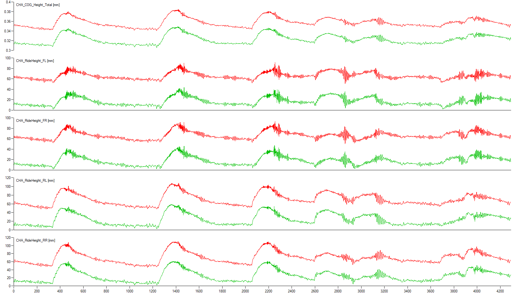
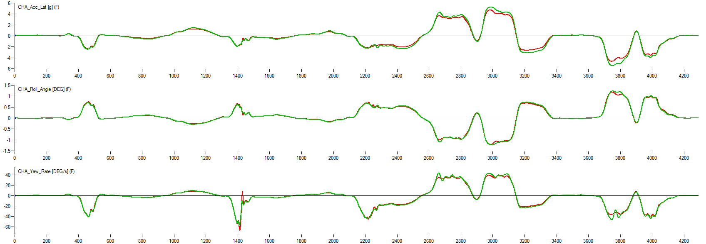
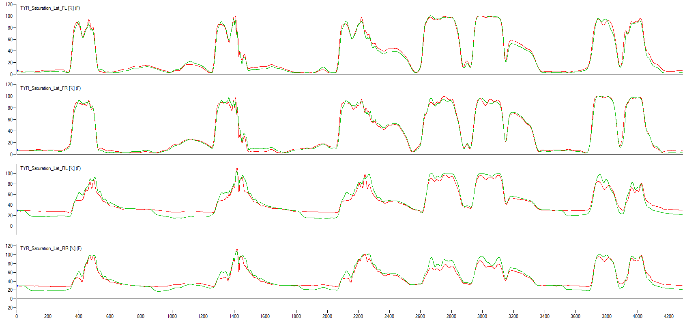
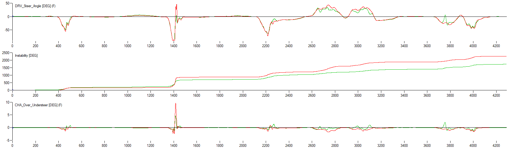
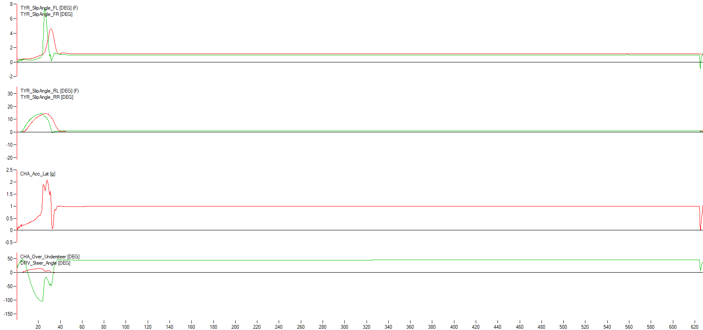

F1 2026 Lap Time Simulation
AVL VSM · Vehicle Dynamics · Aerodynamics · Powertrain | Mar 2025 – May 2025
Project Context
Type: MSc Motorsport Engineering coursework (ENGR7008)
Team: 6-member engineering team divided into Aerodynamics, Vehicle Dynamics, and Powertrain
Objective: Develop 2026 FIA-compliant F1 car setup using AVL VSM
Track: Red Bull Ring, Austria (qualifying + race setups)
2026 Regulation Changes
30% downforce reduction
55% drag reduction
Beam wing removed, simplified floor
MGU-H removed
MGU-K: 120kW → 350kW (3x increase)
ICE power cap: 350kW
My Role: Vehicle Dynamics
Challenge: Initial baseline car exhibited significant understeer and suboptimal handling balance
Setup Changes Implemented
Lowered static ride heights to reduce CoG and improve aero performance. Prevented bottoming via heave springs and corner spring rate adjustments
Tested 44%, 45%, 46% front bias. Optimized to 44% front (max rear weight) for better traction and rotation
Reduced front roll stiffness (softer ARBs + springs) → decreased LLTD from 48.8% to 46.2% in key corners. Increased front grip without compromising rear stability
Higher negative camber on right-side tires for Red Bull Ring's right-hand dominant layout
Front toe-out for enhanced turn-in response. Rear toe-in for corner exit stability

Results and Performance Gains

Front tire utilization increased from 70% to 85-90% (optimal range) → rear maintained 80-85% stability. More even axle balance eliminated front-limited understeer

Significant improvement in low-speed corners (T3 & T7) → earlier throttle application → 2.903s lap time gain (4.4%)
Softer roll stiffness increased roll angles → slightly less predictable transients in direction changes (damper upgrade would help)

50m radius: Strong low-speed rotation (rear slip 12°, front 6-7°) | 200m radius: Stable high-speed behavior with moderate understeer. Setup validated across different load regimes

Team Contributions
Aerodynamics: DRS strategy implementation, aero balance optimization (36% → 45%) | Powertrain: MGU-H removal, MGU-K recalibration (120kW → 350kW), ICE power cap compliance
Final Integration
Qualifying vs Race Philosophy
Qualifying: Maximized downforce with steeper wing angles for single-lap pace | Race: Reduced wing angles for lower drag → higher top speed and tire degradation management
Key Achievements
Eliminated baseline understeer → 15% lateral G improvement, 19% yaw rate improvement → 2.903s lap time gain
Three subsystems (VD, Aero, Powertrain) harmonized through iterative testing → balanced performance gains
Systematic development process with telemetry validation → every change data-supported and performance-justified
Technical Learnings
Aero targets directly influence suspension requirements (ride height windows, roll stiffness for platform control). VD changes affect aero balance. Powertrain maps must match drag profile and gearing needs
Working within FIA technical regulations requires creative solutions to optimize performance within strictly defined boundaries
Post-processing telemetry essential to confirm setup changes produce intended physical effects on vehicle behavior
Areas for Future Development
Higher-rated dampers would control transient roll behavior in fast direction changes (addressing softer roll stiffness tradeoff)
Correction maps and clamping for more accurate simulation of modern F1 adjustable differentials
Greater integration across subgroups after each iteration to assess full-vehicle impact and find optimization opportunities